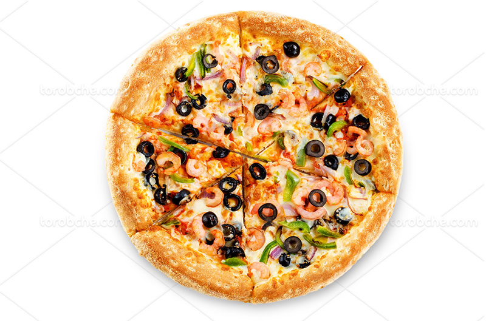
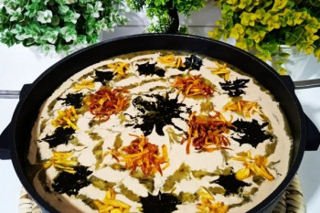
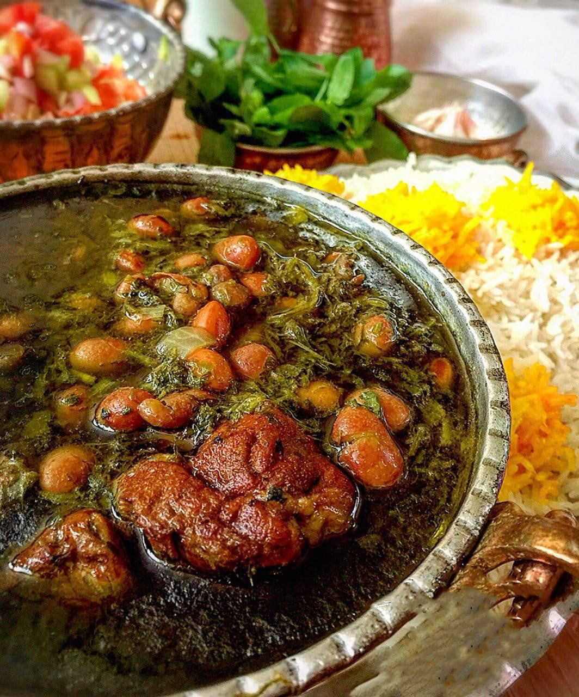
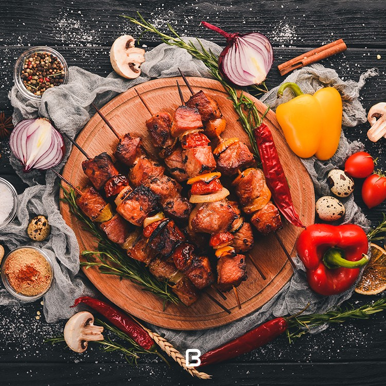

Recipe Details Of Food
-
-
First of all, you need to prepare the pizza dough by mixing flour, yeast, water, salt, and olive oil in a bowl.
Knead the dough until it becomes smooth and elastic, then let it rise for about an hour.
-
Meanwhile, you can prepare the pizza sauce by blending tomatoes, basil, salt, and pepper in a food processor.
-
Next, roll out the dough on a floured surface and top it with the pizza sauce,
shredded mozzarella cheese, and your favorite toppings.

-
-
Wash and peel the onions, then slice them into thin slices.
Cook the chickpeas and beans that you have soaked the night before in a pot with 5 cups of water.
-
Clean the vegetables you have prepared in advance, then wash them.
After rinsing, chop the vegetables to the appropriate size.
- After preparing the vegetables, proceed to prepare the onions.
To do this, fry the sliced onions in a suitable pan with oil until golden.
-
Mix the lentils and vegetables together and let them cook. .
Then add half of the hot onion and hot mint that you prepared in advance to the soup ingredients until combined.

-
-
Soak kidney beans in a bowl of water for 2-3 hours.Wash parsley, cilantro, chives and fenugreek.
Pat dry and chop very finely.Heat a dry pan on low heat and saute the herbs for about 10 minutes until they dry out a bit.
Add 1/3 cup vegetable oil and saute for 15 more minutes on low heat. Set aside.
-
Heat 3 tbsp vegetable oil in a large pot over medium heat. Saute onion until translucent.
Add cubed beef or lamb and turmeric, Saute until the color is light brown.
Add 4-5 cups of water and bring to boil, then turn the heat to medium-low so it simmers lightly.
-
Rinse kidney beans and add it to the stew.Cover and cook for 30 minutes.
Add sauteed herbs and cover. Cook for 1/2 hour on low heat.
Poke Persian dried limes with a fork and add them to the stew, cook for another 15 minutes.
Serve with Persian Steamed White Rice.

-
- Mix meat, onions, garlic, egg, salt and turmeric well and leave in the refrigerator overnight
-or for several hoursPress the meat around long,thick metal skewers and shape evenly.
-
Thread whole tomatoes on another skewer. Barbeque each side for about five minutes, turning frequently.
The oven should be pre-heated and kabab-e koobideh should be placed as high as possible near the source of the heat.
Again, turn a few times. Serve with hot Basmati rice or on middle-eastern bread.
-
If serving with rice, some sumac may be sprinkled on top.
If kabab-e koobideh was made in an oven, the juice from the kabab can be poured on rice or bread.
